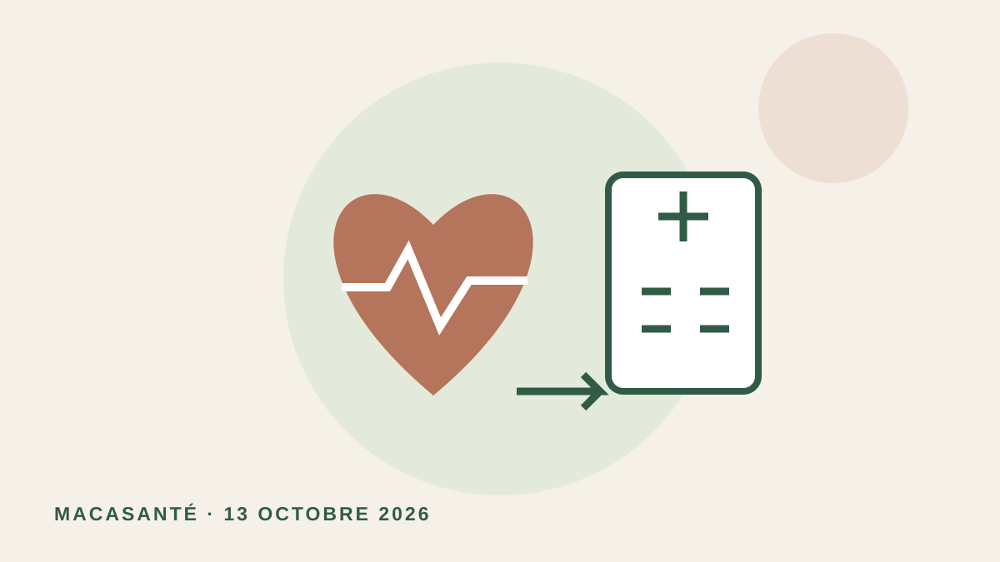

Illustration originale MACASANTÉ, schématique ; aucune image diagnostique réelle.
À LA UNE · 13 OCTOBRE 2026
Infarctus : rapprocher les soins spécialisés peut-il sauver des vies ?
Une nouvelle cohorte américaine associe l’ouverture de centres d’angioplastie à une meilleure survie dans les territoires auparavant mal desservis. Le bénéfice n’est pas retrouvé dans les zones déjà équipées.
Ce que montre la nouvelle étude
L’étude publiée le 12 octobre 2026 analyse 590 282 hospitalisations pour infarctus en Californie entre 2011 et 2022. Dans les territoires auparavant dépourvus de centre d’angioplastie accessible en trente minutes, l’ouverture d’un centre est associée à une baisse de mortalité de 1,8 point à trente jours et de 2,8 points à un an. Les territoires déjà équipés ne montrent pas le même bénéfice.
Ce qu’il faut retenir
Disposer de soins spécialisés accessibles compte. Multiplier les centres dans des zones déjà bien desservies ne garantit pas une amélioration. L’organisation des secours et l’orientation vers le bon établissement sont essentielles.
Les limites
Il s’agit d’une étude observationnelle américaine, sans preuve causale ni transposition directe à la France. Les différences sont des associations mesurées à l’échelle des populations étudiées.
Le repère pratique
En cas de suspicion d’infarctus, appeler le 15 ou le 112. Ne pas attendre pour choisir soi-même un établissement.
Sources
- JAMA Network Open — 12 octobre 2026, doi:10.1001/jamanetworkopen.2026.38687
- Assurance Maladie — Reconnaître un infarctus et agir
Information générale sous contrôle médical, ne remplaçant pas une consultation.